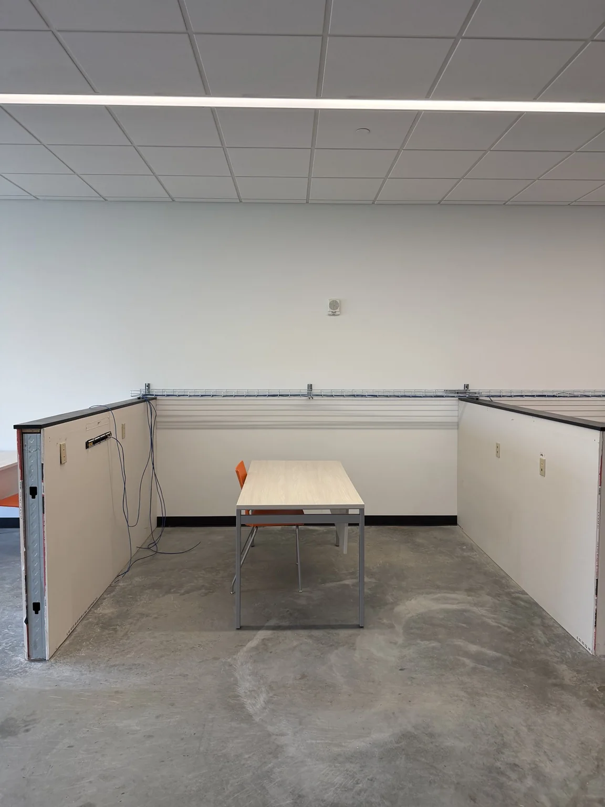

v0.9 approved-media baseline: Recovered media applied from the SOTE approved-media backup. Dedicated approved visuals are used where available; facility reference media is used only where no dedicated approved zone visual exists yet.
Wiring lab
Rocket’s Launch Pad
Hands-on cabling and termination zone where students practice the physical skills that make networks real.

Purpose
Rocket’s Launch Pad turns cabling from theory into muscle memory. Students can practice safe cable prep, termination, testing, and documentation.
Student verbs
Cut, terminate, test, label
Character layer
Professor Rocket
Current state
This zone supports the cabling labs consumables proposal and future visitor-friendly physical skill demonstrations.
Student activity
- Practice cable termination
- Use testers and labeling standards
- Connect cabling work to real rack outcomes
- Earn entry-level physical infrastructure badges
Demo and future missions
- Cable Runner
- Cable Termination Starter
- Technology Cadet: First Signal
- Launch Pad safety orientation
Future media targets
Use this area for any future Marketing-approved photo additions or refreshed public-safe zone media.
Recommended filename: assets/img/photos/rockets-launch-pad-primary.jpg
Use a wide, public-safe image showing the zone without exposing credentials, sensitive labels, private student information, or unapproved screenshots.
Recommended filename: assets/img/photos/rockets-launch-pad-detail.jpg
Use a close-up that explains what students do here: cables, racks, workbench, tour moment, ticket workflow, or badge activity.
Publication guardrail
This page is public-safe. Do not add credentials, sensitive IP addressing, production network details, private student information, unreviewed screenshots, or photos that expose sensitive labels until the SOTE media review process is in place.